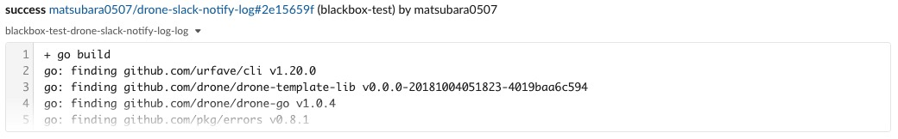

Drone Plugin を作ってみた: slack-notify-log
とある事情で Drone CI のビルドログを Slack にスニペットとして通知したくなった． 公式の plugin/slack では出来なそうだったので，Plugin を自作した，というお話．
作ったもの
色々調べてみたものの，同じビルド中の別のステップでのログを取得する方法がわからなかった… ので，最終手段として Drone API を使って引っ張ってくる方法をとった． ほぼほぼドキュメントは無いが，Drone API は drone/drone-go を使うことで簡単に呼び出すことができる． ざっくりと次のような感じで呼び出している:
import (
"context"
"fmt"
"github.com/drone/drone-go/drone"
"github.com/pkg/errors"
log "github.com/sirupsen/logrus"
"golang.org/x/oauth2"
)
func (p Plugin) Exec() error {
config := new(oauth2.Config)
client := drone.NewClient(
p.Config.DroneHost,
config.Client(
context.Background(),
&oauth2.Token{
AccessToken: p.Config.DroneToken,
},
),
)
logs, err := client.Logs(p.Repo.Owner, p.Repo.Name, p.Build.Number, p.Build.Stage, p.Config.StepNum)
if err != nil {
return errors.Wrapf(err, "can't fetch drone logs: builds/%d/logs/%d/%d", p.Build.Number, p.Build.Stage, p.Config.StepNum)
}
log.Infof("Success: fetch drone logs (lines num is %d)", len(logs))
...
}で，実際の Plugin の使い方はこんな感じ:
steps:
...
- name: notify drone log to slack
image: matsubara0507/slack-notify-log
settings:
template: >
{{#success build.status}}
{{repo.name}} is Success!
{{else}}
{{repo.name}} is Failure...
{{/success}}
token:
from_secret: slack_token
channel: bot-test
step_number: 2
drone_host:
from_secret: drone_host
drone_token:
from_secret: drone_token
when:
status:
- success
- failure各 settings は:
template: スニペットのコメントtoken: slack にポストするための API トークン- 個人トークンや Bots App などから生成する
channel: 通知先チャンネル- 無駄にテンプレートを利用できるようにした(ブランチやビルド結果によって通知先を変えるため)
step_number: 何ステップ目のログを通知したいかstep_number: 1は git clone になる点に注意
drone_host: この CI を実行したい Drone のホスト- 別にシークレットにする必要はないけど
https://cloud.drone.ioとか
drone_token: この CI を実行したい Drone の API トークン
実行結果はこんな感じ:

これは matsubara0507/drone-slack-notify-log のビルドステップ．
おしまい
なんか他に良い方法が絶対にある気がするんだけどな…